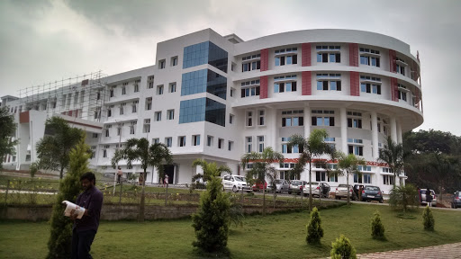

MUTHOOT INSTITUTE OF TECHNOLOGY AND SCIENCE

About Us
Muthoot Institute of Technology and Science (MITS) is promoted by Muthoot M. George Institute of Technology, a Section 25 Company within the Muthoot Group. MITS is a self financing technical institution offering postgraduate and undergraduate engineering programmes, situated in the industrial suburb of Kochi, close to the Smart City and Info Park, approximately 15 kms from Vytilla Junction towards Muvattupuzha on the Cochin Madurai National Highway.
The promoters with their commanding presence in the domains of Financial Services, Hospitality, Healthcare, Renewable Energy and Information Technology, are committed to building MITS as a centre of excellence, focusing purely on merit. This “temple of learning” will provide to the students, state-of-the-art infrastructure, highly qualified and proficient teacher and various faculty of engineering and allied streams, embedded in a conducive
environment where focus will be on their harmonious development.
The Muthoot Group is a flourishing business empire that has pervaded into each and every big & small town of the country, is home to 18 diversified divisions and 4500 plus branches with a global presence. Over 2,53,000 customers visit The Muthoot Group branches every day. The Group has served over 48 crore customers (including repeat customers) till date. The story of The Muthoot Group is built on the foundations of passion, commitment, honesty, traditions and values. The principle of continuous growth and expansion forms the essence of all its activities.
The Group recently celebrated 130 years of unblemished business excellence lending services to millions of under-served Indians leading to Financial Inclusion even in the most remote and rural areas of the country. Since its inception, The Muthoot Group has been transforming lives of millions of Indians across the country, giving wings to their dreams and creating successful realities. The Muthoot Group has not only grown exponentially but has also facilitated growth for a sizeable population of the country that falls in the under-privileged category.
Vision
To be a centre of excellence for learning and research in engineering and technology, producing intellectually well-equipped and socially committed citizens possessing an ethical value system.
Mission
* Offer well-balanced programme of instruction, practical exercise and opportunities in technology.
* Foster innovation and ideation of technological solutions on sustainable basis.
* Nurture a value system in students and engender in them a spirit of inquiry.
Placements Provided
Our major placement recruiters
- infosys
- tcs
- ibm
- Deloitte
- ust global
about